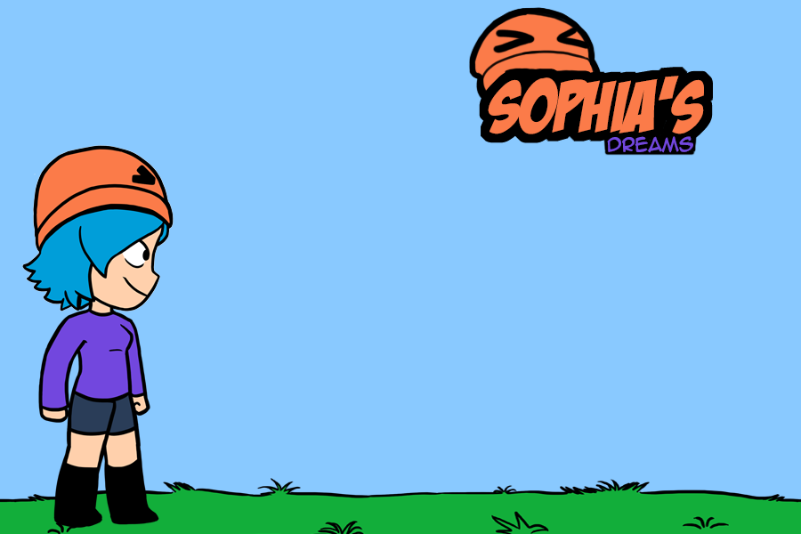
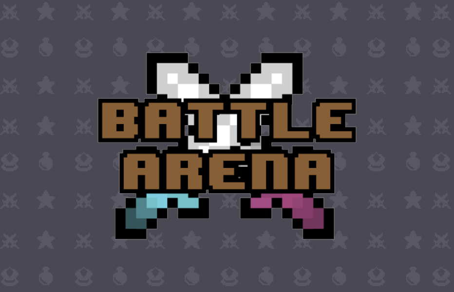

Islas Garcia
Olá, meu nome é Islas Garcia e bem vindos ao meu site pessoal. Sou estudante de Ciência da Computação apaixonado por tecnologia, desenvolvimento de aplicativos e jogos, design e ilustração. Aqui você poderá encontrar alguns de meus trabalhos assim como conhecer mais sobre a minha formação e conhecimentos.
Portfolio
Sophia's Dream
Sophia's Dream é um jogo de plataforma para iOS destinado a todos os amantes da cultura pop. Nele você joga com Sophia, uma garota que ama jogos e memes e sem querer embarca numa aventura dentro de um jogo, tendo que passar por alguns obstáculos. Porém Sophia tem a ajuda inesperada de Aliquam o seu chapéu falante.
Desenvolvedores: Gabriela Carvalho, Islas Garcia, Italus Rodrigues, Renata Faria
Persecution

Jogo para AppleTV, Persecution é um jogo de detetiva e assassino para se jogar com um segundo jogador. Aqui um jogador encarna um detetive e o outro um assassino. O objetivo do detetive é acusar o assassino enquanto o assassino tem como objetivo matar a maior quantidade de pessoas o possível ou assassinar o detetive. O jogo possui uma jogabilidade simples e intuitiva, bastante semelhante a um boardgame.
Desenvolvedores: Clinton Barreto, Islas Garcia, Rebecca Dantas
Battle Arena
Battle Arena é um jogo de estratégia em tempo real para iOS. Aqui você tem um conjunto de cartas que te dá o poder de invocar uma tropa para assim destruir as torres do adversário ou defender a sua. Ganha quem destruir a torre principal do adversário ou destruir mais torrer antes que o tempo acabe.
Desenvolvedores: Felipe Borges, Islas Garcia, Marcus Reuber
Formação
Apple Developer Academy IFCE
Bacharelado em Ciência da Computação
Técnico em informática
Habilidades e conhecimentos
Desenvolvimento iOS, watchOS e tvOS usando as linguagens Objective-C e Swift, com uso dos principais frameworks e APIs.
Também tenho conhecimento de programação JAVA e desenvolvimento Web, tanto frontend quando backend usando PHP e MySql, além de conhecimento em CMSs como Wordpress e Joomla.
- Metodologias ágeis e Scrum
- Noções de UI Design e UX Design
- Ilustração e arte digital
- Pró atividade e trabalho em equipe
Contato
Encontre-me nas redes sociais